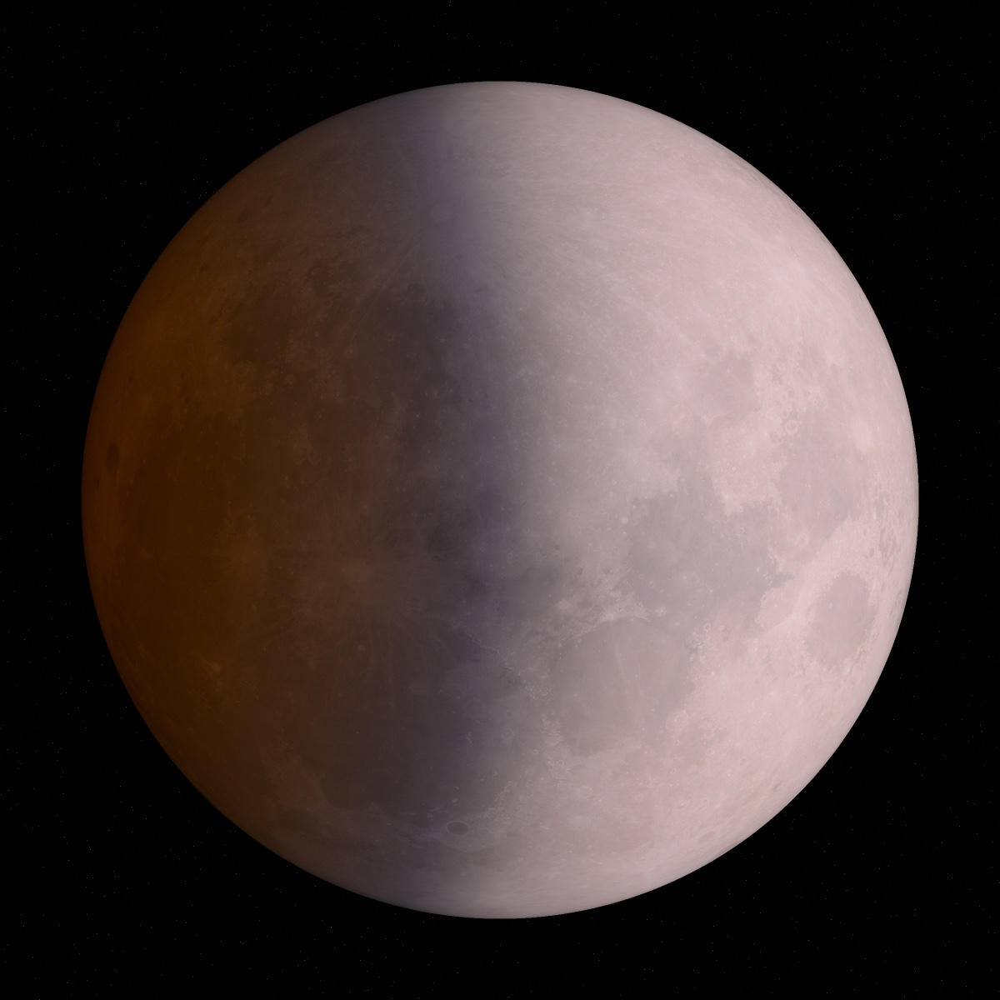
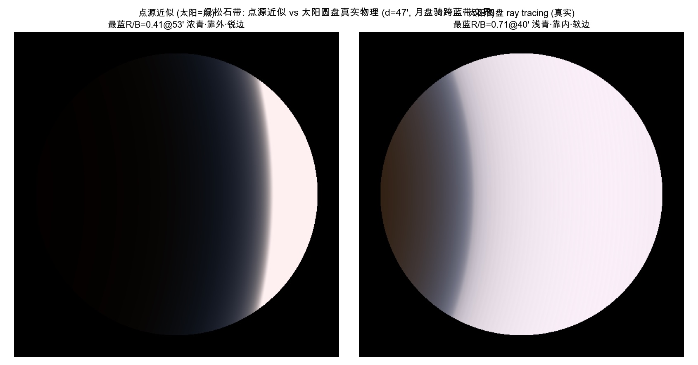
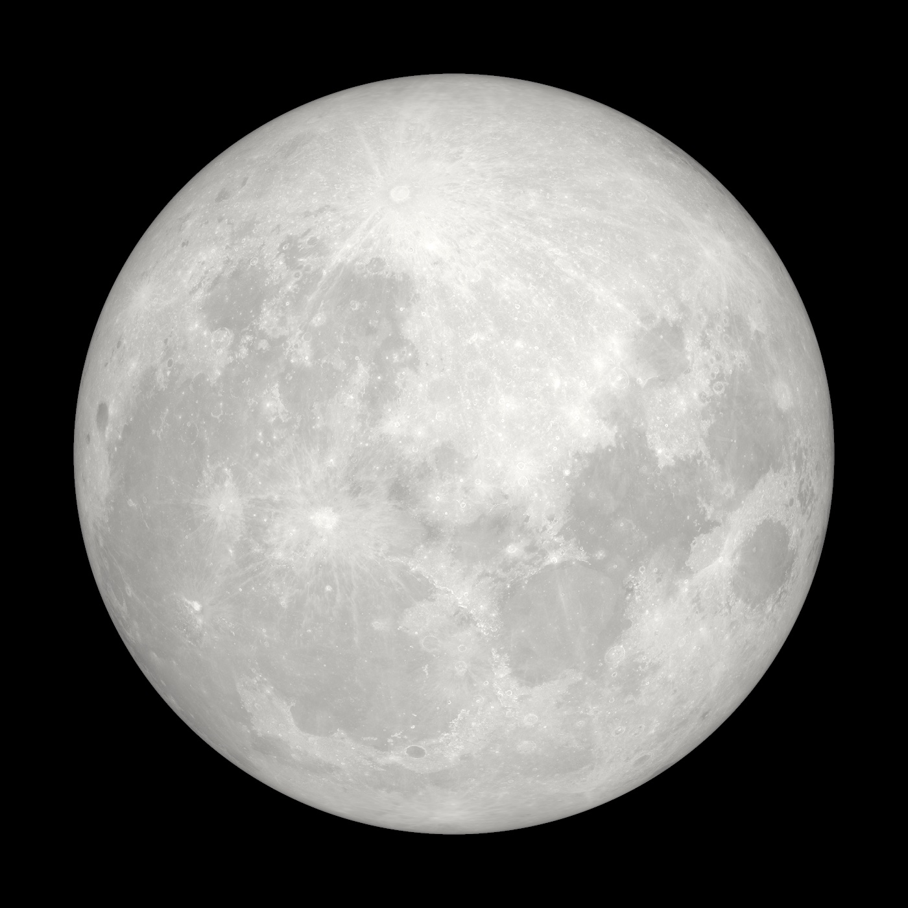
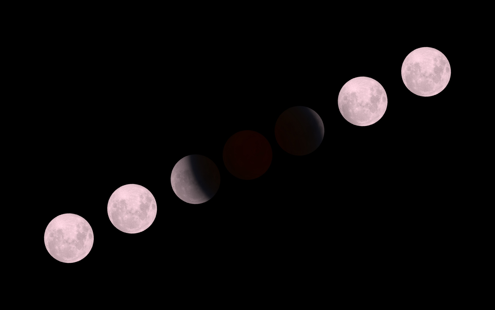
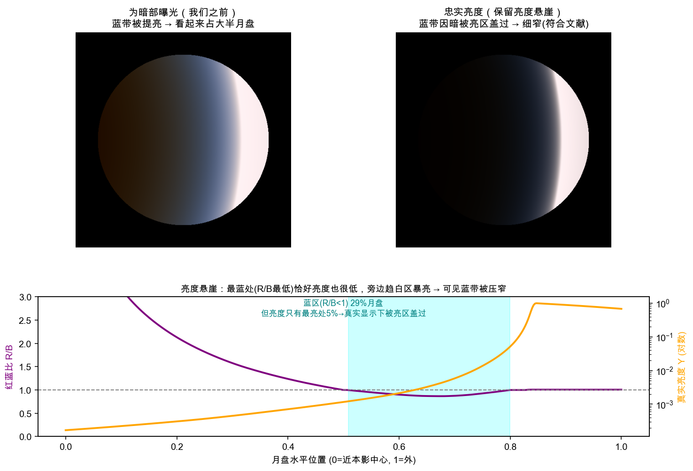
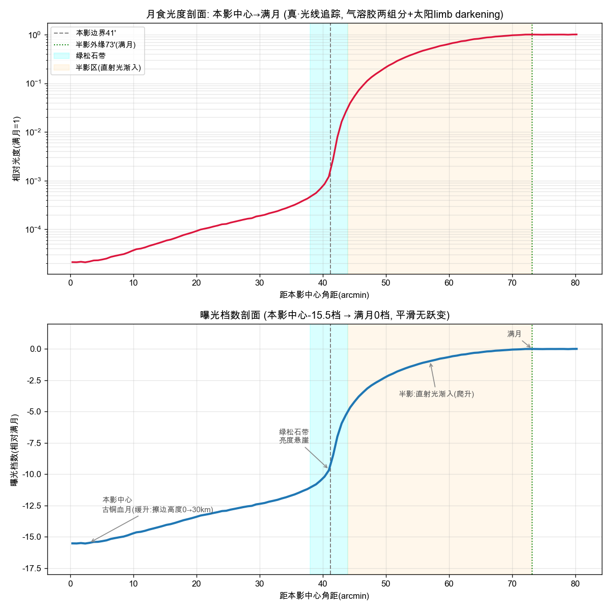

为什么是窄带，而本影内沿没有整圈变青
科普的标准答案是臭氧 Chappuis 吸收吃掉橙红、留下蓝绿。这个答案是对的，但它解释不了带为什么窄：臭氧造成的颜色变化沿月盘是跨十几角分的平滑渐变。带看起来窄，原因在亮度，不在颜色。下面的亮度悬崖一节给出完整答案。
实测大气数据 · 光线追踪 · 颜色全部算出来
它叫绿松石带：血月的铜红和满月的白之间，一道淡青色的过渡。我们没有去拍它，而是用实测的大气数据，对几百万条阳光做折射光线追踪，把它从物理里算了出来。算的过程翻了好几次车，每次翻车都换来一块原来缺着的物理；算完还能做一件照片做不到的事：把臭氧从大气里关掉，看这条带还在不在。

三个反直觉，看完这页就清楚
科普的标准答案是臭氧 Chappuis 吸收吃掉橙红、留下蓝绿。这个答案是对的，但它解释不了带为什么窄：臭氧造成的颜色变化沿月盘是跨十几角分的平滑渐变。带看起来窄，原因在亮度，不在颜色。下面的亮度悬崖一节给出完整答案。
深入本影的位置对应阳光擦过地球大气的低层，瑞利散射在那里把蓝光散得一干二净，只剩红。青色只出现在擦边高度升到平流层、臭氧主导而瑞利退居次要的那一小段，对应的是本影边缘。所以血月最红的时刻，带在月盘之外等着。
卫星实测的带内红蓝比在 0.8 到 1.0 之间，落在画面上就是淡淡的偏青，裸眼几乎注意不到。半个月盘的饱和蓝来自后期：HDR 堆栈，再把青色通道的饱和度大幅拉高。我们拿物理较过这件事，下一节展开。
第一次翻车：拿网红图当参照
项目中途，我们拿一张广为流传的月食蓝带照片当参照：半个月盘浸在浓郁的饱和蓝里。模型这边怎么算都只有淡淡一层青，一度怀疑自己漏了物理。查证之后发现，参照图出自一位风光后期教程作者，标题就是讲怎么修图：HDR 堆栈合成，再用 HSL 把青色通道的饱和度拉到接近霓虹。同类作者自己也说，这种蓝裸眼难以注意，靠 HDR 才能把被忽视的色彩做出来。物理这边的证据指向另一个方向：GOES-16 卫星对月食的实测红蓝比在 0.8 到 1.0 之间，专业天文摄影的原图里，带也只是沿月缘一道浅青细带。我们没有为凑那张图去改物理，后来被这些实测逐条印证。
有意思的是，我们自己也造出过浓青。把太阳当成一个点光源时，模型算出的带又浓又锐（最蓝红蓝比 0.41）；补上太阳 32′ 的圆盘之后，浓青被糊成浅青软边（0.71），才对上真实照片。也就是说，网红图里那种浓青在点源近似的世界里真的存在，只是我们的太阳不答应。
还有一层在人眼里。带的绝对色品其实偏蓝：去掉瑞利、加上气溶胶、模拟多次散射回填，全都改不成青绿。它被看成青绿，是因为旁边是大片暖红的血月，人眼对暖红视场做色彩适应之后，这条相对冷的带才呈现出青绿。turquoise 是相对色，我们没有为凑一个绝对的青绿往模型里加任何机制。

核心实验 · 每步只加一个机制
从一个土圆盘开始，每一步往模型里加一个真实的物理机制，看月盘怎么一步步变成月食的样子。这套逐步开关还附带一个照片给不了的能力：反事实归因。第四步加了臭氧、青带出现；退回第三步等于把臭氧关掉，带就没了。六张图共用同一组对比度增强参数，方便看清每步差异；忠实曝光的版本在亮度悬崖一节。点按任意一步切换。

同一套物理的另一面
月全食时从月面回望，地球的黑夜面完全盖住太阳，只剩一圈被折射点亮的大气环。这两个视角是同一套辐射传输的对偶：月面上某一点的颜色，就等于站在那一点看到的地球大气环的颜色。月面边缘的青带，对应的是大气环朝太阳一侧、平流层那一小段的青。
视频里月心到本影中心的距离从 10′ 推到 60′。第一格（左上）是月面，从深食的古铜血月走到明暗交界，再走进半影的亮白。第二格（右上）是站在月面看地球：黑夜面挡住太阳，大气环的亮侧随几何变化转动，月亮出本影的时刻对应太阳从地球边缘探出的钻石环。第三格（左下）是大气环的长焦特写，环的真实厚度只有地球角径的约 1.3%，画面按比例放大展示。第四格（右下）是绿松石带的光谱成因：瑞利散射、臭氧 Chappuis 吸收和透射窗口随擦边高度移动。视频无声。

最重要的一次翻车
很长一段时间里，我们在颜色这个维度上纠结带宽：文献说带只占月盘直径百分之几，我们的渲染里它却铺开将近三分之一个月盘，于是反复检查臭氧、几何、色彩科学。后来发现翻车翻在曝光上。早期渲染为了让暗部可见，把整个本影提亮了，暗淡的蓝区一被提亮就摊成了宽渐变。这是显示策略制造的假象，物理本身没有错。
真实的机制是一道亮度悬崖。带最蓝的位置恰好也是亮度的低谷；旁边的趋白区因为开始接到半影里的直射阳光，亮度暴涨。按模型卡的口径，photopic 面亮度从满月的 10% 爬到 90% 只用 20.4′（46.7′ 到 67.1′），本影边缘最陡处达到每角分 1.8 档。肉眼能看见的带，是又蓝又够亮这两个条件的交集，被悬崖压成窄窄一丝。所以颜色沿月盘是平滑渐变这件事，和你看到一条边界分明的细带这件事，并不矛盾。
带走的认知有两条。第一，曝光和 tone map 策略能决定性地误导你对物理的判断：诊断一个看着不对的渲染，先分清是物理出了错，还是显示在骗你。第二，全食为什么没有青带的答案也在这条曲线上：本影深处亮度比满月低十几档，擦边高度又低、轮不到臭氧出场，青色只活在悬崖边那条窄缝里。


诚实地说清楚哪些没对上
对上的部分：折射几何与 Mallama 2021 的表格在中高擦边高度段（带所在的区段）吻合在 2% 以内；带最蓝处的红蓝比与卫星实测同为 0.8 到 1.0 的淡青量级（两边口径不同，严格对账见第二项开放项）；带紧贴本影边界、浅青、窄，与专业天文摄影原图一致。
没对上的第一项在暗端。我们的本影中心约 −15 档，口径是最晴朗夜空加上气候学背景气溶胶（纯分子大气的理论上限是 −13.5 档）。Mallama 的 clear-sky 经验消光模型给 −18.7 档（全盘积分）到 −20.5 档（盘面分辨 V 波段）。两个都自称 clear-sky 的模型差出几档，根源之一是 clear-sky 的定义不同：擦边光在大气里走的斜程相当于 40 到 60 倍大气质量，背景气溶胶取值的微小差别会被这个倍数放大。分歧的定位还是开放项。
第二项在卫星窄带口径。Shu 2024 用高分四号卫星测到本影边界处一条 R/B<1 的 ribbon，径向全宽 120 到 190 公里。我们的一维模型在同口径下复现不出它：单层的窄带凹陷存在，但被 32′ 太阳盘的卷积和本影深处流入的红光抹平。敏感性分析排除了气溶胶参数和深层红光这两个嫌疑，目前最强的候选是切点高度 8 到 19 公里那层红肩光缺了消光（对流层顶的薄卷云，模型没有建，当晚的实际云况也无从考证），另有卫星光谱响应、月面反照率正负 15%、二维边界测量对一维径向平均三个口径差，每一个的量级都足以改写判据。
第三项是模型自己声明的负边界：它不能告诉你下一次月食是亮是暗。那由当时的平流层气溶胶决定，大火山喷发后的全食能比平静年份暗好几档。模型给出的是物理机制，和最晴朗条件下的亮度下界。
给真正好奇的人
画面里没有任何贴图调色或唯象参数：折射逐条光线数值积分，消光沿弯曲路径用实测截面累加，聚焦和散焦从几百万条光线的落点密度里自然涌现。原理页讲六个关键技术决策、与三组文献的对账、模型卡里的关键数字，以及每张图的可复现命令。
给想自己动手的人
代码、实测数据的下载脚本和全部参数都在仓库里。你可以重渲这页所有的图和视频，也可以拨动每个物理开关，做你自己的反事实实验：比如把臭氧柱量换成另一个季节的，看带的颜色怎么变。